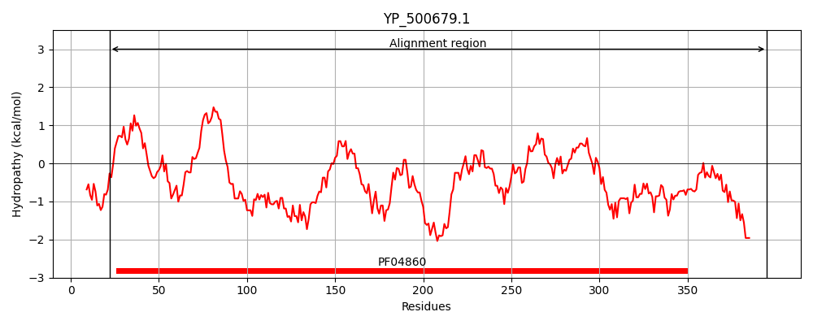
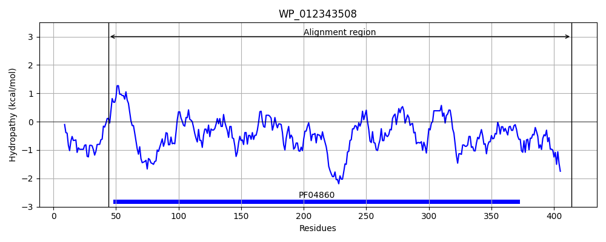
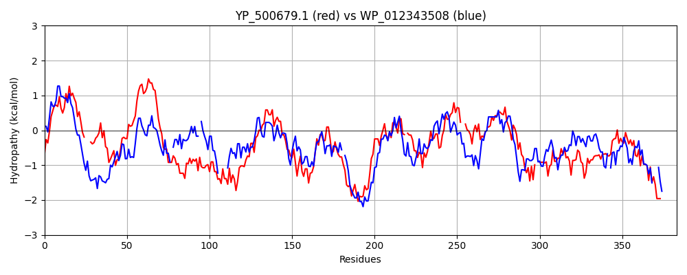

Hit Accession: WP_012343508
Hit TCID: 1.W.2.1.3
Hit Description: gnl|BL_ORD_ID|20810 gnl|TC-DB|WP_012343508.1|1.W.2.1.3 phage portal protein [Clostridium botulinum]
Mach Len: 383
e:0.000000
Query TMS Count : 0
Hit TMS Count: 0
TMS-Overlap Score: 0.000000
Predicted Substrates:CHEBI:4291;deoxyribonucleic acid
BLAST Alignment:
Score: 353 , Bit scores: 140 bits, E-value: 9.6e-38, Alignment length: 383, Percentage identity: 28
Query: 22 AIRHSDIFTAVMMIASDLARMPIRV---TVNGQINYSDRIVNLLNTRPNPMYNGYIFKLVVFVSALLTSHGYIEITRDKTGEPMNLTFRKTSEIELKSDARGRLYYFHQRIDSNGNNIERNVKFEDMLDIKFYSLDGINGLSLLDTLSRTIESDNNGKDFLNNFLRNGTHAGGILKMKGVLDNKKARDRAREEFHKSFSGTKQAGKVVVLDESMTFDQL-EVDTEVLKLIRENKSSTREIAGVFGIPLHKFGI--ETANMSITDANLD-YLSTLKPYITCVCAELNFKFNDEYVNREF--KFDTTEIRVVDEKTQAEIDKINIDSGKMNIDEIRQRDGLAPIPGGNGSIHRVDLNHVNIELVDEYQMNKSRATDKKLKGGEEN 395
A+ S ++ +IAS ++++PI + +G + + LL RPN FK + V LL + Y+ I R + G+ +NL ++ L+ +G + Y + NN ++++ IK S DGI G S +D L TI + + + L N+ +NGT G++ L N A+ R+++ ++ SG AGKV VLD + + ++ + + + K + EIA VF +PLH + +I +LD Y++T+ P + + E N+K ++ KF+ D T++ + I+ G +I+E+R+ + + I G G HRVDLNHV+I++ ++YQ+ K T+ K KGGE N
Sbjct: 44 ALTISGVYACTDIIASSISKLPIHIYQKNKDGSNRVDNDVSYLLEKRPNLYMTPSTFKQTLTVKLLLDGNTYVWIER-RRGKAINLWILNNVQV-LQDPTKGEIIY-----KATLNNKSHTFFNDEIIHIKSLSTDGILGKSKIDILRETIGNMQSSRKLLGNYFKNGTTTSGVITYPSNL-NTDAKTEIRKQWQENNSGYDNAGKVAVLDLGLEYKEINSLKFTDQQFLESTKFTLEEIARVFKVPLHMINSLDRSTFNNIEQQSLDFYMNTILPLLLQIEEEFNYKLFSSTQREKYFIKFNMEGALRGDSATRSAYYEKMINLGVYSINEVRKLENMNSI-GIQGDTHRVDLNHVDIKVANDYQLAK---TNSKNKGGEIN 414 | Protein Hydropathy Plots: |
|---|
|  |  |
Pairwise Alignment-Hydropathy Plot:
|
|---|
|  |